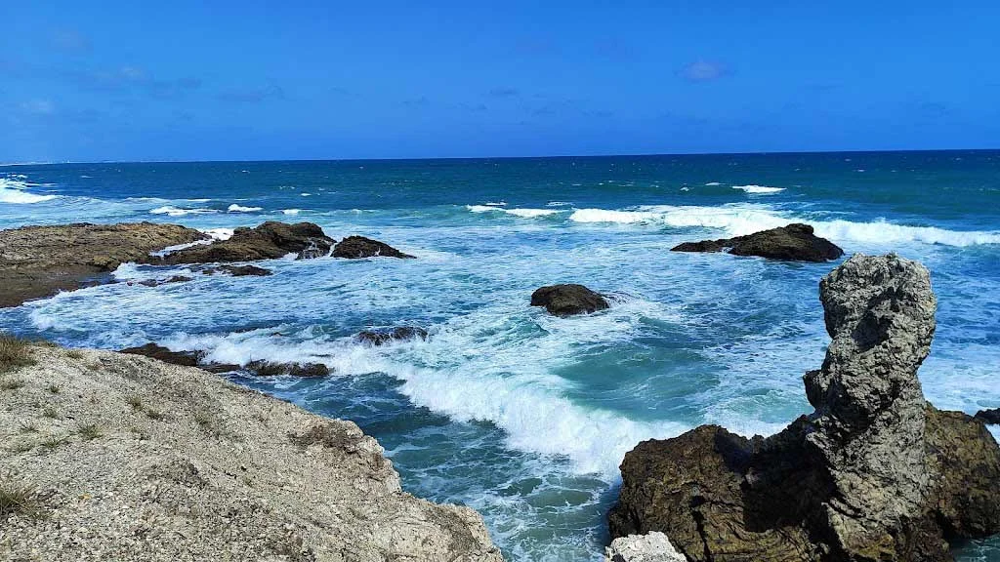
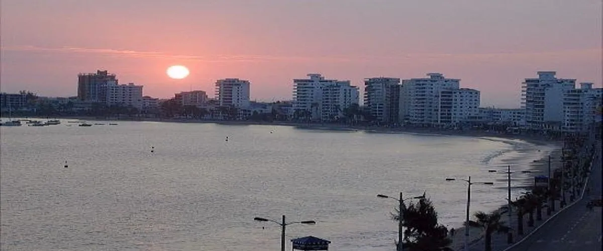
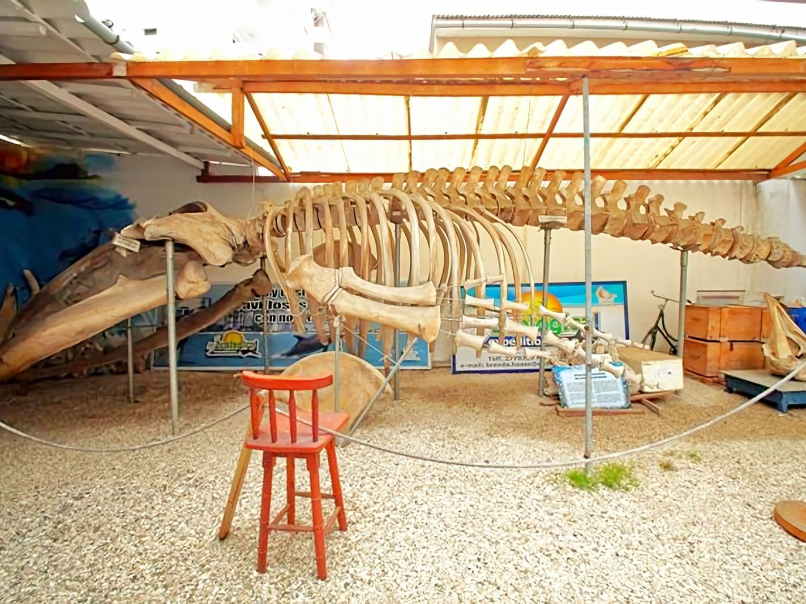

| La Chocolatera |
|
Uno de los lugares más emblemáticos de Salinas es sin duda La Chocolatera, un punto geográfico
donde las corrientes marinas chocan con fuerza contra los acantilados, creando un espectáculo natural impresionante.
Es también un lugar estratégico para observar aves marinas, y en ciertas temporadas se puede avistar ballenas jorobadas
desde la costa. El acceso al área está regulado por las Fuerzas Armadas, ya que se encuentra dentro de una base naval,
lo cual garantiza su conservación y seguridad para los visitantes.
|
 |
| Malecón de Salinas |
El Malecón de Salinas es otro punto icónico. A lo largo de su recorrido se puede disfrutar de una
vista directa al mar, con áreas de descanso, puestos de comida, alquiler de bicicletas y espacios para fotografía.
Muy cerca se encuentra la Playa de Chipipe, considerada una de las más limpias y tranquilas del país, ideal para
familias con niños pequeños debido a su oleaje suave. También está la Playa de San Lorenzo, popular por su ambiente
juvenil y la posibilidad de practicar deportes acuáticos como el surf, el jet ski o el paddle board.
|
 |
| Museo de Ballenas |
Para quienes prefieren actividades educativas y de conservación, el Museo de Ballenas es una excelente opción.
Este espacio promueve el conocimiento sobre los cetáceos que habitan en el Pacífico sur, mostrando esqueletos reales,
paneles informativos y proyecciones multimedia. También se puede visitar la Reserva Marina El Pelado, donde se organizan
paseos en bote para observar la fauna marina y realizar buceo o snorkel en aguas claras y tranquilas.
|
 |